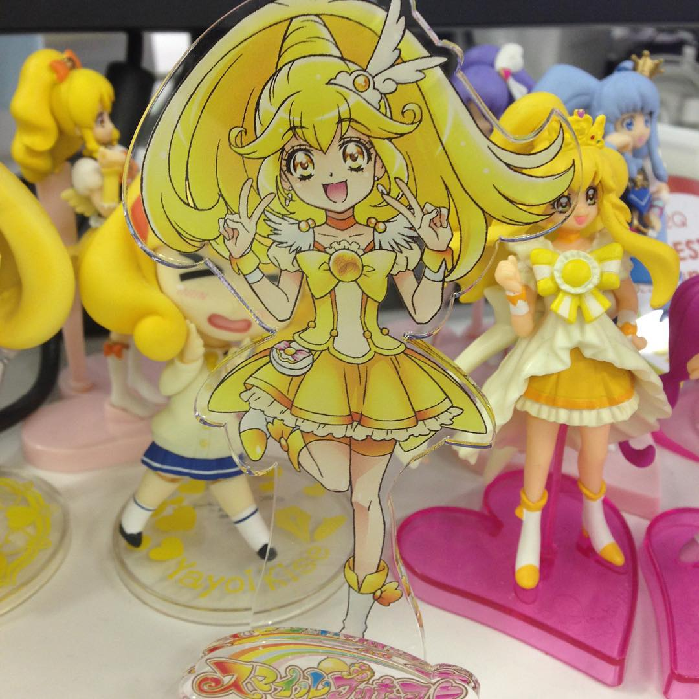

<section>

<h2>GoがGoでプリキュアを作った</h2>

<p>sue445</p>

<p>2015/12/06 Go Conference 2015 Winter</p>

</section>
<section>

<h2>自己紹介</h2>

<p><a href="https://twitter.com/sue445"></a></p>

<ul>
<li>Go Sueyoshi a.k.a <a href="https://twitter.com/sue445">sue445</a>

<ul>
<li>golang歴 3ヶ月</li>
<li>Go歴 33年</li>
</ul>
</li>
<li>
<a href="http://www.drecom.co.jp/">株式会社ドリコム</a> 所属

<ul>
<li>インフラ、アプリ、ライブラリ、社内ツールetc</li>
<li>サーバサイド全般を浅く広く見守るお仕事</li>
</ul>
</li>
<li>「ドリコムのプリキュアおじさん」</li>
</ul>

</section>
<section>

<h2>【今期の嫁】キュアトゥインクル</h2>

<p></p>

</section>
<section>

<h2>【本妻】キュアピース</h2>

<p></p>

</section>
<section>

<h2>Agenda</h2>

</section>
<section>

<!--
  disable uppercase
  via. http://srz-zumix.blogspot.jp/2014/09/revealjs-markdown.html
-->

<style type="text/css">
    .reveal h1,
    .reveal h2,
    .reveal h3,
    .reveal h4,
    .reveal h5,
    .reveal h6 {
      text-transform: none;
    }
</style>

</section>
